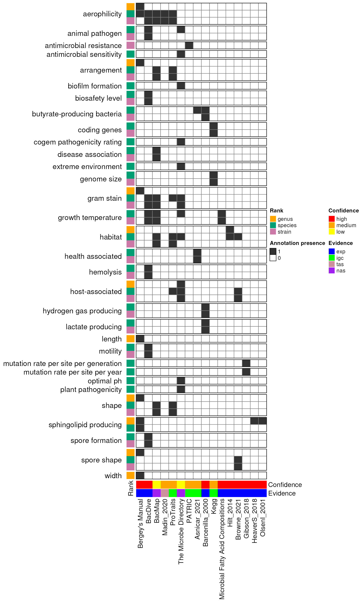
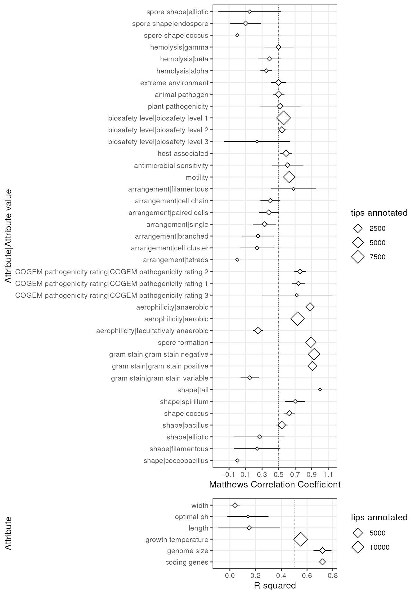

Data integration and stats
Source:vignettes/articles/data_integration_and_stats.Rmd
data_integration_and_stats.Rmd
library(bugphyzzAnalyses)
library(bugphyzz)
library(dplyr)
library(taxPPro)
library(ggplot2)
library(forcats)
library(ggpubr)
library(taxPPro)
library(tidyr)
library(ComplexHeatmap)
library(purrr)Data
bp <- importBugphyzz(version = 'devel', force_download = TRUE)Source data
Number of annotaions per source
Here, inheritance and asr are treated as two separate and new sources. Note that the majority of annotations actually come from the propagation step.
summary_source <- bp |>
mutate(
Attribute_source = ifelse(is.na(Attribute_source), Evidence, Attribute_source)
) |>
mutate(
Attribute_source = case_when(
Attribute_source == 'inh' ~ 'Propagation (inheritance)',
Attribute_source == 'asr' ~ 'Propagation (ASR)',
TRUE ~ Attribute_source
)
) |>
filter(!grepl(';', Attribute_source)) |>
count(Attribute_source) |>
arrange(-n) |>
head(10)
# summary_source
summary_source_p <- summary_source |>
ggplot(aes(reorder(Attribute_source, -n), n)) +
geom_col(fill = 'dodgerblue4', alpha = 0.8) +
labs(
x = 'Top 10 source', y = '# Annotations'
) +
theme_bw() +
theme(
axis.text.x = element_text(angle = 45, hjust = 1),
panel.grid.major.x = element_blank(),
panel.grid.major.y = element_line(color = 'black', linewidth = 0.2)
)
summary_source_p
Note: These are total numbers. Would it be interesting to see these by physiology type with percentage?
Completeness
Import data of taxa used to create the taxonomic tree:
base_taxa <- get_ncbi_taxids('bti') |>
rename(domain = kingdom) |>
mutate(Rank = ifelse(Rank == 'superkingdom', 'domain', Rank)) |>
filter(Rank %in% taxRanks()) |>
select(-Taxon_name, -Parent_NCBI_ID)
base_taxa_summary <- base_taxa |>
count(Rank, name = "n_inbase")NCBI IDs in data structure
## 90% of the taxa in the original taxa can be found in the tree.
bp_original_source <- filter(bp, !is.na(Attribute_source))
mean(bp_original_source$NCBI_ID %in% base_taxa$NCBI_ID)
#> [1] 0.9065858
## Create sets for calculating completeness
## inset are all ids found in the tree structure
## inset_sources are all ids found in the tree structure and come from
## original sources only`
inset <- bp |>
filter(NCBI_ID %in% base_taxa$NCBI_ID)
inset_summary <- inset |>
count(Attribute_group, Rank, name = 'n_inset')
inset_sources <- inset |>
filter(!is.na(Attribute_source))
inset_sources_summary <- inset_sources |>
count(Attribute_group, Rank, name = 'n_sources')
## Calculate completeness
completeness <- base_taxa_summary |>
left_join(inset_summary, by = c('Rank') ) |>
left_join(inset_sources_summary, by = c('Attribute_group', 'Rank')) |>
mutate(
completeness_before = n_sources / n_inbase,
completeness_after = n_inset / n_inbase
) |>
relocate(
Attribute_group, Rank, completeness_before, completeness_after,
n_inbase, n_inset
)
completeness <- base_taxa_summary |>
left_join(inset_summary, by = c('Rank') ) |>
left_join(inset_sources_summary, by = c('Attribute_group', 'Rank')) |>
mutate(
completeness_before = n_sources / n_inbase,
completeness_after = n_inset / n_inbase
) |>
relocate(
Attribute_group, Rank, completeness_before, completeness_after,
n_inbase, n_inset
)
comp_mat_bef <- completeness |>
select(Attribute_group, Rank, completeness_before) |>
filter(!is.na(completeness_before)) |>
pivot_wider(
names_from = 'Rank', values_from = 'completeness_before',
values_fill = 0
) |>
tibble::column_to_rownames(var = 'Attribute_group') |>
select(all_of(taxRanks()[1:3])) |>
as.matrix() |>
round(digits = 2)
comp_mat_aft <- completeness |>
select(Attribute_group, Rank, completeness_after) |>
pivot_wider(
names_from = 'Rank', values_from = 'completeness_after',
values_fill = 0
) |>
tibble::column_to_rownames(var = 'Attribute_group') |>
select(all_of(taxRanks())) |>
as.matrix() |>
round(digits = 2)
comp_mat_bef <- comp_mat_bef[rownames(comp_mat_aft),]Create heatmaps
color_fun <- circlize::colorRamp2(
breaks = c(0, 1), colors = c('white', 'dodgerblue4')
)
lgd <- Legend(col_fun = color_fun, title = "completeness")
ht_b <- Heatmap(
matrix = comp_mat_bef,
cluster_rows = FALSE, cluster_columns = FALSE,
row_names_side = 'left',
show_heatmap_legend = FALSE,
col = color_fun,
cell_fun = function(j, i, x, y, width, height, fill) {
grid.rect(x = x, y = y, width = width, height = height,
gp = gpar(col = "black", fill = NA))
}
)
ht_a <- Heatmap(
matrix = comp_mat_aft,
cluster_rows = FALSE, cluster_columns = FALSE,
row_names_side = 'left',
name = 'completeness',
heatmap_legend_param = list(
at = c(0, 0.5, 1)
),
col = color_fun,
cell_fun = function(j, i, x, y, width, height, fill) {
grid.rect(x = x, y = y, width = width, height = height,
gp = gpar(col = "black", fill = NA))
}
)
ht_list <- ht_b + ht_a
ht <- draw(
ht_list,
ht_gap = unit(0.4, "cm")
)
Add confidence of annotations for this figure. Discuss the meaning of the inference. Hold out validation. Choose random annotations (10% ~30-100x). Cross-validation. Hold out positives and negatives. One rank or physiology at at a time. Look for a citation for method implemented for validation. Check Mathews Correlation coefficient for balanced/unbalanced prediction. Matthews correlation coefficient Try different tissues.
Dispersion of sources
Import bugphyzz data before propagation and before resolving conflicts, agreements, and double annotations.
phys <- physiologies(remove_false = TRUE, full_source = FALSE)
#> Warning: Missing columns in biosafety level. Missing columns are: Accession_ID
#> Warning: Missing columns in country. Missing columns are: Accession_ID
#> Warning: Missing columns in geographic location. Missing columns are:
#> Accession_ID
#> Warning: Missing columns in halophily. Missing columns are: Accession_ID
#> Warning: Missing columns in hemolysis. Missing columns are: Accession_ID
#> Warning: Missing columns in metabolite utilization. Missing columns are:
#> Accession_ID
#> Warning: Missing columns in metabolite utilization. Missing columns are:
#> Accession_ID
#> Warning: Missing columns in motility. Missing columns are: Accession_ID
#> Warning: Missing columns in pathogenicity human. Missing columns are:
#> Accession_ID
#> Warning: Missing columns in spore formation. Missing columns are: Accession_ID
phys_ <- map(phys, ~ prepareDatForPropagation(.x, resolve = FALSE))
attr_grps <- whichAttrGrp(bp)
data <- phys_ |>
map(~ count(.x, Attribute_source, Rank)) |>
bind_rows(.id = 'Attribute_group') |>
drop_na() |>
filter(Attribute_source != '') |>
filter(Attribute_group %in% attr_grps) |>
filter(!grepl('BacDive;', Attribute_source)) |>
mutate(new_column = paste0(Attribute_group, '|', Rank)) |>
select(new_column, Attribute_source, n) |>
pivot_wider(
names_from = 'Attribute_source', values_from = 'n', values_fill = 0
) |>
arrange(new_column) |>
tibble::column_to_rownames(var = 'new_column') |>
as.matrix()
bar_vct <- sub('^.*\\|', '', rownames(data))
split_vct <- sub('\\|.*$', '', rownames(data))
bar_color <- viridis::viridis(n = 3, option = 'C')
names(bar_color) <- c('genus', 'species', 'strain')
row_ha <- rowAnnotation(
'Rank' = bar_vct, col = list(Rank = bar_color),
show_annotation_name = FALSE
)
log2_data <- log2(data + 1)
ht_sources <- Heatmap(
matrix = log2_data,
cluster_rows = FALSE, cluster_columns = FALSE,
show_row_names = FALSE,
row_names_side = 'left',
name = 'log2(# annotations + 1)',
show_heatmap_legend = TRUE,
col = color_fun(c(min(log2_data), max(log2_data))),
left_annotation = row_ha,
row_split = split_vct,
column_names_rot = 45,
row_title_rot = 0, gap = unit(0.1, 'inches'),
cell_fun = function(j, i, x, y, width, height, fill) {
grid.rect(x = x, y = y, width = width, height = height,
gp = gpar(col = "black", fill = NA))
}
)
ht_sources
Number of taxa
Top 10 species by number of annotations
This is not really the top ten species since there are a lot of overlaps (ties) in the number of annotations. So these are the first 10 after arranging by number of annotations per species and alphabetically.
top10_sp <- bp |>
filter(Rank == 'species') |>
count(NCBI_ID, Taxon_name) |>
arrange(-n, Taxon_name) |>
head(10)
top10_sp_p <- top10_sp |>
ggplot(aes(reorder(Taxon_name, -n), n)) +
geom_col(fill = 'dodgerblue4', alpha = 0.8) +
labs(x = 'Top 10 species', y = '# annotations') +
scale_y_continuous(breaks = scales::pretty_breaks()) +
theme_bw() +
theme(
axis.text.x = element_text(angle = 90, hjust = 1),
panel.grid.major.y = element_line(color = 'black', linewidth = 0.2),
panel.grid.major.x = element_blank()
)
top10_sp_p
Frequency of number of annotations per taxon
unknowns <- bp |>
filter(Evidence %in% c('asr', 'inh') & Frequency == 'unknown')
normal <- bp |>
filter(!(Evidence %in% c('asr', 'inh') & Frequency == 'unknown'))
freq_annot_rank1 <- unknowns |>
count(Rank, name = 'n_taxa') |>
mutate(n_annot = 0)
freq_annot_rank2 <- bp |>
count(Rank, NCBI_ID, name = 'n_annot') |>
count(Rank, n_annot, name = 'n_taxa')
freq_annot_rank <- bind_rows(freq_annot_rank1, freq_annot_rank2)
freq_rank_p <- freq_annot_rank |>
mutate(Rank = factor(Rank, levels = taxRanks())) |>
filter(Rank %in% c('genus', 'species', 'strain')) |>
ggplot(aes(n_annot, n_taxa)) +
geom_col(fill = 'dodgerblue4', alpha = 0.8) +
scale_y_continuous(breaks = scales::pretty_breaks()) +
scale_x_continuous(
# limits = c(0, 11),
breaks = scales::pretty_breaks()
) +
labs(x = 'Number of annotaions per taxon', y = 'Frequency') +
facet_wrap(~Rank, scales = 'free_y') +
theme_bw() +
theme(
panel.grid.major.x = element_blank(),
panel.grid.minor.x = element_blank(),
panel.grid.major.y = element_line(color = 'black', linewidth = 0.1)
)
freq_rank_p
Let’s use log
freq_rank_p2 <- freq_annot_rank |>
mutate(Rank = factor(Rank, levels = taxRanks())) |>
mutate(n_taxa = log2(n_taxa + 1)) |>
filter(Rank %in% c('genus', 'species', 'strain')) |>
ggplot(aes(n_annot, n_taxa)) +
geom_col(fill = 'dodgerblue4', alpha = 0.8) +
scale_y_continuous(breaks = scales::pretty_breaks()) +
scale_x_continuous(
# limits = c(0, 11),
breaks = scales::pretty_breaks()
) +
labs(x = 'Number of annotaions per taxon', y = 'Frequency') +
facet_wrap(~Rank, scales = 'free_y') +
theme_bw() +
theme(
panel.grid.major.x = element_blank(),
panel.grid.minor.x = element_blank(),
panel.grid.major.y = element_line(color = 'black', linewidth = 0.1)
)
freq_rank_p2
Compare both plots (real numbers and log2)
freq_rank_p_combined <- ggarrange(
freq_rank_p + ggtitle('Real frequencies'),
freq_rank_p2 + ggtitle('log2 frequencies'),
ncol = 1
)
freq_rank_p_combined 
Numbers per physiology
Annotations per physiology
phys_summary <- bp |>
count(Attribute_group) |>
arrange(-n)
phys_summary_plot <- phys_summary |>
ggplot(aes(Attribute_group, n)) +
geom_col(fill = 'dodgerblue4', alpha = 0.8) +
labs(y = '# annotations', x = 'Top 10 physiologies') +
theme_bw() +
theme(
axis.text.x = element_text(angle = 45, hjust = 1),
panel.grid.major.x = element_blank(),
panel.grid.major.y = element_line(color = 'black', linewidth = 0.2)
)
phys_summary_plot
Session information
sessioninfo::session_info()
#> ─ Session info ───────────────────────────────────────────────────────────────
#> setting value
#> version R version 4.3.0 (2023-04-21)
#> os Ubuntu 22.04.2 LTS
#> system x86_64, linux-gnu
#> ui X11
#> language en
#> collate en_US.UTF-8
#> ctype en_US.UTF-8
#> tz Etc/UTC
#> date 2023-06-19
#> pandoc 2.19.2 @ /usr/local/bin/ (via rmarkdown)
#>
#> ─ Packages ───────────────────────────────────────────────────────────────────
#> package * version date (UTC) lib source
#> abind 1.4-5 2016-07-21 [1] RSPM (R 4.3.0)
#> backports 1.4.1 2021-12-13 [1] RSPM (R 4.3.0)
#> BiocFileCache 2.8.0 2023-04-25 [1] Bioconductor
#> BiocGenerics 0.46.0 2023-04-25 [1] Bioconductor
#> bit 4.0.5 2022-11-15 [1] RSPM (R 4.3.0)
#> bit64 4.0.5 2020-08-30 [1] RSPM (R 4.3.0)
#> blob 1.2.4 2023-03-17 [1] RSPM (R 4.3.0)
#> bold 1.3.0 2023-05-02 [1] RSPM (R 4.3.0)
#> broom 1.0.5 2023-06-09 [1] RSPM (R 4.3.0)
#> bslib 0.5.0 2023-06-09 [1] RSPM (R 4.3.0)
#> bugphyzz * 0.0.1.3 2023-06-19 [1] Github (waldronlab/bugphyzz@7abbf41)
#> bugphyzzAnalyses * 0.1.0 2023-06-19 [1] local
#> cachem 1.0.8 2023-05-01 [1] RSPM (R 4.3.0)
#> Cairo 1.6-0 2022-07-05 [1] RSPM (R 4.3.0)
#> car 3.1-2 2023-03-30 [1] RSPM (R 4.3.0)
#> carData 3.0-5 2022-01-06 [1] RSPM (R 4.3.0)
#> circlize 0.4.15 2022-05-10 [1] RSPM (R 4.3.0)
#> cli 3.6.1 2023-03-23 [1] RSPM (R 4.3.0)
#> clue 0.3-64 2023-01-31 [1] RSPM (R 4.3.0)
#> cluster 2.1.4 2022-08-22 [2] CRAN (R 4.3.0)
#> codetools 0.2-19 2023-02-01 [2] CRAN (R 4.3.0)
#> colorspace 2.1-0 2023-01-23 [1] RSPM (R 4.3.0)
#> ComplexHeatmap * 2.16.0 2023-04-25 [1] Bioconductor
#> conditionz 0.1.0 2019-04-24 [1] RSPM (R 4.3.0)
#> cowplot 1.1.1 2020-12-30 [1] RSPM (R 4.3.0)
#> crayon 1.5.2 2022-09-29 [1] RSPM (R 4.3.0)
#> crul 1.4.0 2023-05-17 [1] RSPM (R 4.3.0)
#> curl 5.0.1 2023-06-07 [1] RSPM (R 4.3.0)
#> data.table 1.14.8 2023-02-17 [1] RSPM (R 4.3.0)
#> DBI 1.1.3 2022-06-18 [1] RSPM (R 4.3.0)
#> dbplyr 2.3.2 2023-03-21 [1] RSPM (R 4.3.0)
#> desc 1.4.2 2022-09-08 [1] RSPM (R 4.3.0)
#> digest 0.6.31 2022-12-11 [1] RSPM (R 4.3.0)
#> doParallel 1.0.17 2022-02-07 [1] RSPM (R 4.3.0)
#> dplyr * 1.1.2 2023-04-20 [1] RSPM (R 4.3.0)
#> evaluate 0.21 2023-05-05 [1] RSPM (R 4.3.0)
#> fansi 1.0.4 2023-01-22 [1] RSPM (R 4.3.0)
#> farver 2.1.1 2022-07-06 [1] RSPM (R 4.3.0)
#> fastmap 1.1.1 2023-02-24 [1] RSPM (R 4.3.0)
#> filelock 1.0.2 2018-10-05 [1] RSPM (R 4.3.0)
#> forcats * 1.0.0 2023-01-29 [1] RSPM (R 4.3.0)
#> foreach 1.5.2 2022-02-02 [1] RSPM (R 4.3.0)
#> fs 1.6.2 2023-04-25 [1] RSPM (R 4.3.0)
#> generics 0.1.3 2022-07-05 [1] RSPM (R 4.3.0)
#> GetoptLong 1.0.5 2020-12-15 [1] RSPM (R 4.3.0)
#> ggplot2 * 3.4.2 2023-04-03 [1] RSPM (R 4.3.0)
#> ggpubr * 0.6.0 2023-02-10 [1] RSPM (R 4.3.0)
#> ggsignif 0.6.4 2022-10-13 [1] RSPM (R 4.3.0)
#> GlobalOptions 0.1.2 2020-06-10 [1] RSPM (R 4.3.0)
#> glue 1.6.2 2022-02-24 [1] RSPM (R 4.3.0)
#> gridExtra 2.3 2017-09-09 [1] RSPM (R 4.3.0)
#> gtable 0.3.3 2023-03-21 [1] RSPM (R 4.3.0)
#> highr 0.10 2022-12-22 [1] RSPM (R 4.3.0)
#> hms 1.1.3 2023-03-21 [1] RSPM (R 4.3.0)
#> hoardr 0.5.3 2023-01-26 [1] RSPM (R 4.3.0)
#> htmltools 0.5.5 2023-03-23 [1] RSPM (R 4.3.0)
#> httpcode 0.3.0 2020-04-10 [1] RSPM (R 4.3.0)
#> httr 1.4.6 2023-05-08 [1] RSPM (R 4.3.0)
#> IRanges 2.34.0 2023-04-25 [1] Bioconductor
#> iterators 1.0.14 2022-02-05 [1] RSPM (R 4.3.0)
#> jquerylib 0.1.4 2021-04-26 [1] RSPM (R 4.3.0)
#> jsonlite 1.8.5 2023-06-05 [1] RSPM (R 4.3.0)
#> knitr 1.43 2023-05-25 [1] RSPM (R 4.3.0)
#> labeling 0.4.2 2020-10-20 [1] RSPM (R 4.3.0)
#> lifecycle 1.0.3 2022-10-07 [1] RSPM (R 4.3.0)
#> magrittr 2.0.3 2022-03-30 [1] RSPM (R 4.3.0)
#> matrixStats 1.0.0 2023-06-02 [1] RSPM (R 4.3.0)
#> memoise 2.0.1 2021-11-26 [1] RSPM (R 4.3.0)
#> mgsub 1.7.3 2021-07-28 [1] RSPM (R 4.3.0)
#> munsell 0.5.0 2018-06-12 [1] RSPM (R 4.3.0)
#> pillar 1.9.0 2023-03-22 [1] RSPM (R 4.3.0)
#> pkgconfig 2.0.3 2019-09-22 [1] RSPM (R 4.3.0)
#> pkgdown 2.0.7 2022-12-14 [1] RSPM (R 4.3.0)
#> png 0.1-8 2022-11-29 [1] RSPM (R 4.3.0)
#> purrr * 1.0.1 2023-01-10 [1] RSPM (R 4.3.0)
#> R6 2.5.1 2021-08-19 [1] RSPM (R 4.3.0)
#> ragg 1.2.5 2023-01-12 [1] RSPM (R 4.3.0)
#> rappdirs 0.3.3 2021-01-31 [1] RSPM (R 4.3.0)
#> RColorBrewer 1.1-3 2022-04-03 [1] RSPM (R 4.3.0)
#> readr 2.1.4 2023-02-10 [1] RSPM (R 4.3.0)
#> rjson 0.2.21 2022-01-09 [1] RSPM (R 4.3.0)
#> rlang 1.1.1 2023-04-28 [1] RSPM (R 4.3.0)
#> rmarkdown 2.22 2023-06-01 [1] RSPM (R 4.3.0)
#> rprojroot 2.0.3 2022-04-02 [1] RSPM (R 4.3.0)
#> RSQLite 2.3.1 2023-04-03 [1] RSPM (R 4.3.0)
#> rstatix 0.7.2 2023-02-01 [1] RSPM (R 4.3.0)
#> S4Vectors 0.38.1 2023-05-02 [1] Bioconductor
#> sass 0.4.6 2023-05-03 [1] RSPM (R 4.3.0)
#> scales 1.2.1 2022-08-20 [1] RSPM (R 4.3.0)
#> sessioninfo 1.2.2 2021-12-06 [1] RSPM (R 4.3.0)
#> shape 1.4.6 2021-05-19 [1] RSPM (R 4.3.0)
#> stringi 1.7.12 2023-01-11 [1] RSPM (R 4.3.0)
#> stringr 1.5.0 2022-12-02 [1] RSPM (R 4.3.0)
#> systemfonts 1.0.4 2022-02-11 [1] RSPM (R 4.3.0)
#> taxa 0.4.2 2022-04-12 [1] RSPM (R 4.3.0)
#> taxize 1.0 2023-06-19 [1] Github (ropensci/taxize@bcff2a6)
#> taxizedb 0.3.1 2023-04-03 [1] RSPM (R 4.3.0)
#> taxPPro * 0.1.0 2023-06-19 [1] Github (sdgamboa/taxPPro@77f3e0d)
#> textshaping 0.3.6 2021-10-13 [1] RSPM (R 4.3.0)
#> tibble 3.2.1 2023-03-20 [1] RSPM (R 4.3.0)
#> tidyr * 1.3.0 2023-01-24 [1] RSPM (R 4.3.0)
#> tidyselect 1.2.0 2022-10-10 [1] RSPM (R 4.3.0)
#> tzdb 0.4.0 2023-05-12 [1] RSPM (R 4.3.0)
#> utf8 1.2.3 2023-01-31 [1] RSPM (R 4.3.0)
#> uuid 1.1-0 2022-04-19 [1] RSPM (R 4.3.0)
#> vctrs 0.6.3 2023-06-14 [1] RSPM (R 4.3.0)
#> viridis 0.6.3 2023-05-03 [1] RSPM (R 4.3.0)
#> viridisLite 0.4.2 2023-05-02 [1] RSPM (R 4.3.0)
#> vroom 1.6.3 2023-04-28 [1] RSPM (R 4.3.0)
#> withr 2.5.0 2022-03-03 [1] RSPM (R 4.3.0)
#> xfun 0.39 2023-04-20 [1] RSPM (R 4.3.0)
#> xml2 1.3.4 2023-04-27 [1] RSPM (R 4.3.0)
#> yaml 2.3.7 2023-01-23 [1] RSPM (R 4.3.0)
#>
#> [1] /usr/local/lib/R/site-library
#> [2] /usr/local/lib/R/library
#>
#> ──────────────────────────────────────────────────────────────────────────────